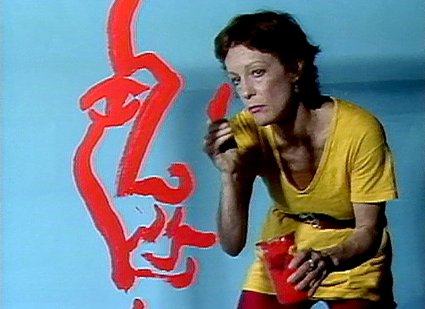

Auto-Destructive Art and the Art Strike. Together with John Sharkey.
Gustav Metzger
1926-2017
Marina Abramović
El trabajo de Abramović explora la relación entre el artista y la audiencia, los límites del cuerpo y las posibilidades de la mente.
1946
Joan Jonas
Joan Jonas (nació en Nueva York el 13 de julio de 1936) es una artista visual estadounidense y pionera en el arte de performance y vídeo. Emergió a finales de los años sesenta y principios de los setenta
